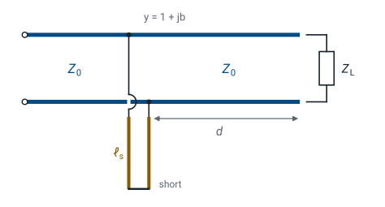

L9 - Impedance Matching II#
Impedance Matching II
Today we match a load with a parallel component, and then with a stub of line.
Lesson 9 · Module 1: Foundations · Maj Ellis · Dr. Neil Rogers
Learning Objectives
- I can use the transmission line equation to match a load to a source using a length of transmission line.
Lesson 8 matched a complex load with a length of line and one series component. A series component has to cut into the line, which is awkward in a coaxial cable. Today we put the component across the line instead, in parallel. Parallel elements add as admittances, so we redo the Lesson 8 derivation with admittance in place of impedance. Then we replace the component with a shorted or open stub, so the whole matching network is made of transmission line. We keep the same load as Lesson 8, \(33.9 + j17.9\ \Omega\) at 1 GHz, so we can compare the two designs directly.
Where We Were
Lesson 8: series matching
Lesson 8 moved a distance \(d\) from the load to a point where the normalized impedance is \(z = 1 + jx\), then cancelled \(jx\) with a series capacitor or inductor. The reactance \(x\) came from the magnitude of \(\Gamma\), which does not change along a lossless line, and the distance came from how far the phase of \(\Gamma\) has to rotate. For the \(33.9 + j17.9\ \Omega\) load, the two answers were a \(5.44\) pF capacitor at \(0.064\lambda\) and a \(4.65\) nH inductor at \(0.269\lambda\).
Admittance
Parallel admittances add: \(y = y_1 + y_2\).
The normalized admittance \(y\) is the reciprocal of the normalized impedance. Its real part \(g\) is the normalized conductance and its imaginary part \(b\) is the normalized susceptance. We substitute \(z = 1/y\) into the reflection coefficient and multiply the numerator and denominator by \(y\), which gives \(\Gamma\) in terms of \(y\). The result has the same form as before with the sign of the numerator flipped. Admittances of elements in parallel add, just as impedances in series add, and that is why admittance is the natural variable for a parallel component. A match is still \(y = 1\).
The Matching Idea in Admittance

Move a distance \(d\) along the line until \(y = 1 + jb\).
Cancel \(jb\) with a parallel susceptance \(-jb\).
The design follows Lesson 8 step for step. Moving away from the load rotates \(\Gamma\), and the normalized conductance passes through \(g = 1\) twice in every half wavelength. At either point the admittance is \(y = 1 + jb\). A component connected across the line at that point adds its own admittance, so a susceptance of \(-jb\) leaves \(y = 1\), and the source sees \(Z_0\). The figure shows that component built as a shorted stub, which we come to after the lumped version.
Finding the Susceptance
At the matching point, \(y = 1 + jb\):
We substitute \(y = 1 + jb\) into the admittance form of the reflection coefficient. The magnitude of \(-jb\) is \(\vert b\vert\), the same as the magnitude of \(jx\) in Lesson 8, so the magnitude equation is identical with \(b\) in place of \(x\). Since \(\vert\Gamma\vert\) is fixed along the line, we solve for \(b\) exactly as before. For the same load, the susceptance at the parallel matching points has the same size as the reactance at the series matching points.
Finding the Distance
The upper sign is for \(b > 0\). Add \(360^\circ\) if \(\theta_\Gamma - \theta_d\) is negative.
The angles differ from Lesson 8 because of the minus sign. For \(b > 0\) the numerator \(-jb\) sits at \(-90^\circ\) and the denominator at \(\tan^{-1}(b/2)\), so the angle of the quotient is \(-90^\circ - \tan^{-1}(b/2)\). For \(b < 0\) every angle changes sign. The rest of the derivation is unchanged: moving a distance \(d\) rotates the load’s phase by \(-2\beta d\), so we set \(\theta_\Gamma - 2\beta d = \theta_d\) and solve for \(d\), at \(720^\circ\) of rotation per wavelength.
Worked Example: Distance
\(Z_L = 33.9 + j17.9\ \Omega\), \(\Gamma = 0.281\angle 119.9^\circ\):
Solution |
\(y\) at the point |
\(\theta_d\) |
\(2\beta d\) |
\(d\) |
|---|---|---|---|---|
1 |
\(1 - j0.585\) |
\(+106.3^\circ\) |
\(13.6^\circ\) |
\(0.019\lambda\) |
2 |
\(1 + j0.585\) |
\(-106.3^\circ\) |
\(226.2^\circ\) |
\(0.314\lambda\) |
The load and its reflection coefficient are the ones from Lesson 8, so \(\vert b\vert = 0.585\) and \(\tan^{-1}(0.585/2) = 16.3^\circ\). For \(b = -0.585\) the matching phase is \(+106.3^\circ\), and the load’s phase must rotate from \(119.9^\circ\) down to \(106.3^\circ\), which takes only \(13.6/720 = 0.019\lambda\). For \(b = +0.585\) the matching phase is \(-106.3^\circ\), a rotation of \(226.2^\circ\), which takes \(0.314\lambda\). In RG-58 at 1 GHz these distances are 0.38 cm and 6.28 cm.
Worked Example: Shunt Components
Solution |
Cancel |
Component at 1 GHz |
|---|---|---|
1 |
\(-j11.7\) mS |
capacitor, \(1.86\) pF |
2 |
\(+j11.7\) mS |
inductor, \(13.6\) nH |
The susceptance to cancel is \(b/Z_0 = 0.585/50 = 11.7\) mS. Solution 1 has \(-j11.7\) mS at its matching point, so it needs a parallel element with \(+j11.7\) mS. A capacitor has admittance \(j\omega C\):
Solution 2 has \(+j11.7\) mS, so it needs an inductor, whose admittance is \(\frac{1}{j\omega L} = -\frac{j}{\omega L}\). Setting \(\frac{1}{\omega L} = 11.7\) mS gives \(L = 13.6\) nH.
Stub Admittance
From Lesson 7, with \(y = Z_0/Z_\text{in}\):
Lesson 7 showed that a shorted or open stub has a purely reactive input impedance, so its admittance is purely susceptive. We take the reciprocal of each input impedance and multiply by \(Z_0\) to normalize it, using \(\frac{1}{j} = -j\) and \(\frac{1}{\tan} = \cot\). A stub of the same line, cut to the right length \(\ell_s\) and connected across the line at the matching point, supplies the cancelling susceptance with no lumped component at all. Every susceptance from \(-\infty\) to \(+\infty\) is available from a stub shorter than half a wavelength.
Worked Example: Stub Lengths
Solution |
Stub must give |
Shorted: \(\cot\beta\ell_s = -b_s\) |
Open: \(\tan\beta\ell_s = b_s\) |
|---|---|---|---|
1 |
\(b_s = +0.585\) |
\(0.334\lambda\) (6.68 cm) |
\(0.084\lambda\) (1.68 cm) |
2 |
\(b_s = -0.585\) |
\(0.166\lambda\) (3.32 cm) |
\(0.416\lambda\) (8.32 cm) |
Solution 1 needs a stub with normalized susceptance \(b_s = +0.585\). An open stub gives it when \(\tan\beta\ell_s = 0.585\), so \(\beta\ell_s = 30.3^\circ\) and \(\ell_s = 30.3/360 = 0.084\lambda\). A shorted stub gives it when \(\cot\beta\ell_s = -0.585\), which first happens at \(\beta\ell_s = 120.3^\circ\). Solution 2 needs \(b_s = -0.585\): a shorted stub at \(59.7^\circ\), or an open stub at \(149.7^\circ\). A stub’s length is a one-way trip, so it is \(360^\circ\) per wavelength, not \(720^\circ\).
Checking the Design
Select the \(33.9 + j17.9\ \Omega\) preset and turn on Admittance. The green dots now mark where the input conductance equals \(1/Z_0 = 20\) mS, at \(0.019\lambda\) and \(0.314\lambda\). Move the cursor to \(0.019\lambda\): the input admittance reads \(20.0 - j11.7\) mS, which the \(1.86\) pF capacitor or the open stub cancels. Then select the Short preset, turn Admittance on, and move the cursor to \(0.334\lambda\) to see the shorted stub for solution 1 supply \(+j11.7\) mS.
Shorted or Open
Choose the shortest line and stub that give the match.
Open stubs radiate from their open end at high frequency.
Shorted stubs are easy to make in coax and also short DC.
Solution 1 with an open stub is the most compact design here: \(0.38\) cm of line and a \(1.68\) cm stub. Shorter lengths usually hold the match over a wider band, for the same reason as in Lesson 8. The open end of a stub is not a perfect open circuit; it radiates a little and has fringing capacitance, so at high frequency a shorted stub is often more predictable. A shorted stub also puts a DC short across the line, which is harmless for a signal path but matters when the line carries bias current to an amplifier.
The Procedure
Normalize: \(y_L = Z_0/Z_L\), and find \(\Gamma\).
Find \(b = \pm\frac{2\vert\Gamma\vert}{\sqrt{1 - \vert\Gamma\vert^2}}\) and \(\theta_d\).
Find \(d = \frac{\theta_\Gamma - \theta_d}{720^\circ}\lambda\).
Cancel \(jb\) with a parallel component or stub.
These steps match any load with one parallel element, and they differ from the series procedure only in the angle \(\theta_d\) and in what the last step adds. The reflection coefficient can be found from either \(z_L\) or \(y_L\); the two forms give the same \(\Gamma\). Lessons 10 through 13 do this design on the Smith chart, where finding \(d\) becomes a rotation on a circle and finding the stub length becomes reading a second point off the chart’s edge.
Summary
Symbol / idea |
What it is |
Number to remember |
|---|---|---|
Normalized admittance |
\(y = \frac{1}{z} = g + jb\) |
\(\Gamma = \frac{1 - y}{1 + y}\) |
Susceptance at the matching point |
From \(\vert\Gamma\vert\), two signs |
\(b = \pm\frac{2\vert\Gamma\vert}{\sqrt{1 - \vert\Gamma\vert^2}}\) |
Phase at the matching point |
Angle of \(\frac{-jb}{2 + jb}\) |
\(\theta_d = \mp\left(90^\circ + \tan^{-1}\frac{\vert b\vert}{2}\right)\) |
Stub admittance |
Shorted and open stubs of length \(\ell_s\) |
\(-j\cot\beta\ell_s\) and \(j\tan\beta\ell_s\) |
Worked example |
\(33.9 + j17.9\ \Omega\) at 1 GHz |
\(0.019\lambda\) with \(1.86\) pF or a \(0.084\lambda\) open stub |
Practice
Where This Is Going
Lesson 10: the Smith chart, a plot of \(\Gamma\) with impedance drawn on it.
Lessons 11–13: these matching designs, worked on the chart.
Every matching design in Lessons 8 and 9 came down to the same move: rotate \(\Gamma\) at constant magnitude until the real part of \(z\) or \(y\) equals 1. The Smith chart draws the circles of constant \(r\) and constant \(g\) on the plane of \(\Gamma\), so that move becomes a rotation you can see and measure with a compass. Lesson 10 builds the chart from \(z = \frac{1 + \Gamma}{1 - \Gamma}\), the relation we derived in Lesson 8.
Before Lesson 10, print a blank Smith chart from the handouts on the Materials page and bring it to class.